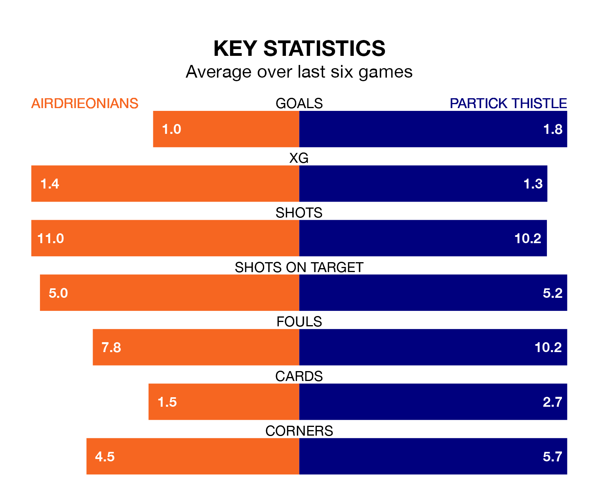

Two of the Championship's top sides face each other at the Excelsior Stadium in Saturday's kick-off, when fourth-placed Airdrieonians host third-placed Partick Thistle.
Airdrieonians have picked up eight wins and three draws from 20 games so far this season, and sit nine points below the visitors going into the 3pm match.
Thistle, meanwhile, have won 10 and drawn six of 21, picking up 36 points.
With 42 goals in 21 games so far this season, Partick Thistle are the league's second-highest scorers with 2.0 goals per game. But they are conceding more than average too, letting in 33 goals at a rate of 1.6 per game.
Airdrieonians, meanwhile, are below average scorers, with 0.9 goals per game, compared to a league average of 1.4. They have conceded 1.1 goals per game.
In Brian Graham, Thistle have the league's sharpest shooter so far this season. He has notched 10 goals in 20 appearances.
His goal rate of one every 160 minutes is quicker than that of Callum Gallagher, the home team's top scorer with a goal every 239 minutes, and a total of five goals in 20 games.
In the last 10 years, Airdrieonians and Partick Thistle have played each other on nine occasions. Airdrieonians won one of them and Partick Thistle the other.
On average, Airdrieonians scored 0.8 goals and Thistle 1.7 in those matches.
Their last meeting was on December 2, when Partick Thistle won 2-1 at home.
Airdrieonians are in mixed form in the Championship, with three wins and a draw from their last six games.
With three wins and two draws over that period, the visitors' form is slightly better – they have taken 11 points from 18, compared to Airdrieonians's 10.
Airdrieonians's last match was on January 6, a 1-0 win against Raith Rovers, with Nikolay Todorov getting the goal for Airdrieonians.
Partick Thistle drew 1-1 with Greenock Morton last time out, on January 13, with Ricco Diack on the scoresheet.
Updated: 10:02 (UTC), 19/01/24